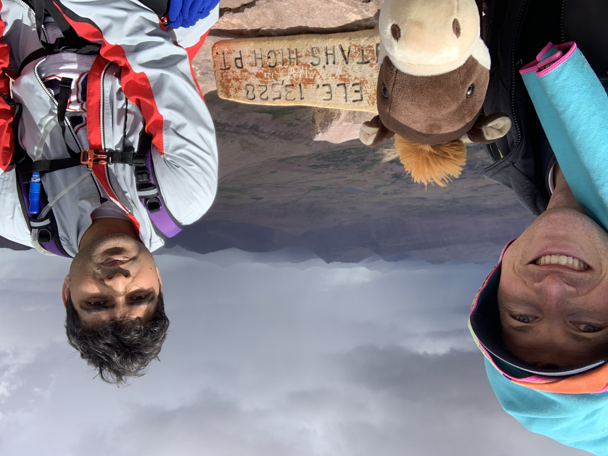
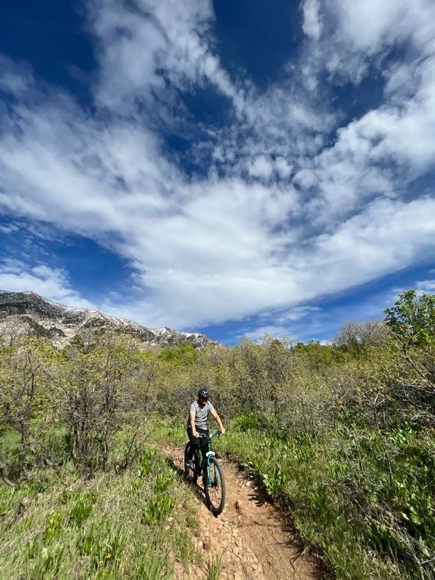
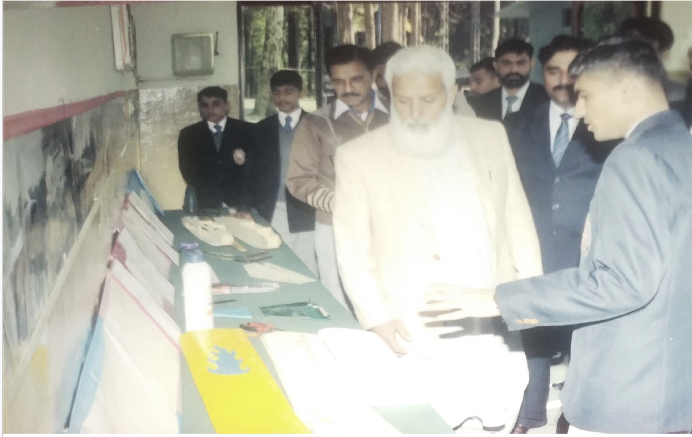

Hello! I'm M. Waseem Ashraf, a PhD student in Mechanical Engineering at Brigham Young University, working under the supervision of Dr. Eric R. Homer.
Outside the lab, I spend as much time as I can exploring the outdoors—whether it’s hiking trails, mountain biking through Utah’s canyons, or playing a good game of basketball with friends. These activities keep me balanced, energized, and always ready for the next challenge.
I’ve been a maker for as long as I can remember. Back in 7th grade, I joined my school’s aeromodelling club and built my first RC plane out of balsa wood. That hobby quickly turned into a passion—by the time I finished high school, I had designed and flown at least seven planes, each one teaching me something new about aerodynamics, materials, and design.

That early start naturally grew into a career in engineering. During my undergraduate studies at the Pakistan Institute of Engineering and Applied Sciences, I worked on ambitious projects like designing an air ambulance using aerodynamic simulations and leading a Hyperloop Pod Competition team, where I developed passive magnetic levitation systems. After graduation, I expanded my skills through teaching and freelance design, creating solutions ranging from MEMS devices and microfluidic systems to aerospace components and medical device prototypes.
Now, as a PhD candidate in Mechanical Engineering at Brigham Young University, I study the mechanical and electrical properties of advanced ceramics through NSF-sponsored research. My work blends first-principles simulations with experimental validation to develop solid-state actuators and better understand material behavior. Alongside research, I’ve taken on leadership roles, serving as President of the Mechanical Engineering Graduate Association to help foster collaboration and community among graduate students.
From crafting balsa wood planes to modeling materials at the atomic scale, one theme has carried through my journey: I love making things that matter, and I’m always looking for the next challenge that pushes ideas into reality.